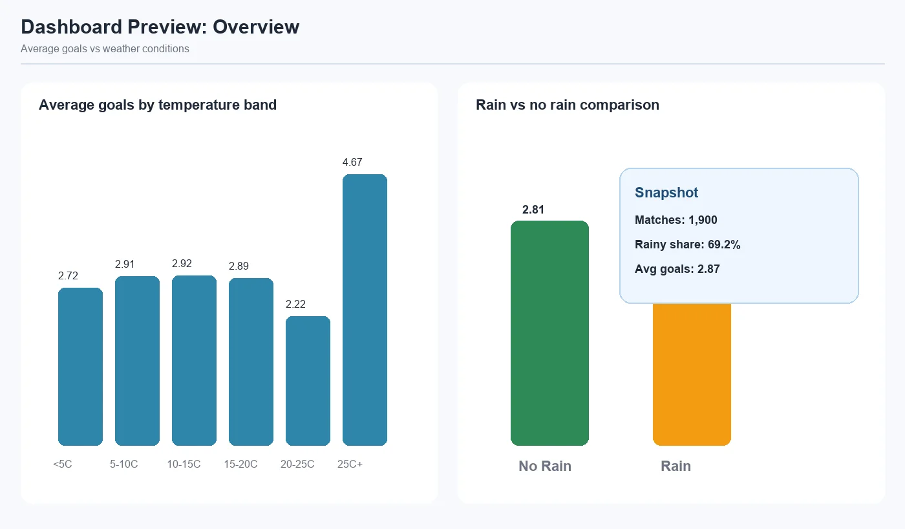
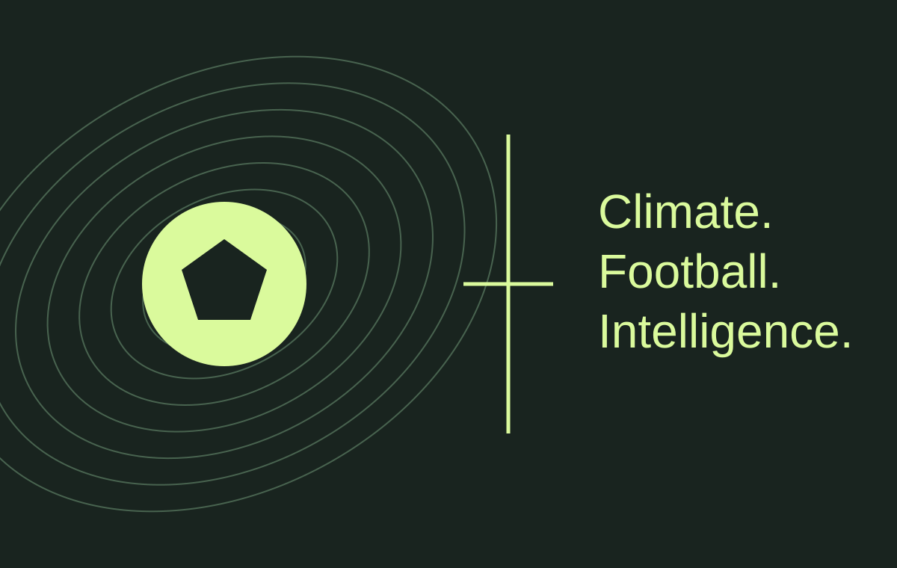
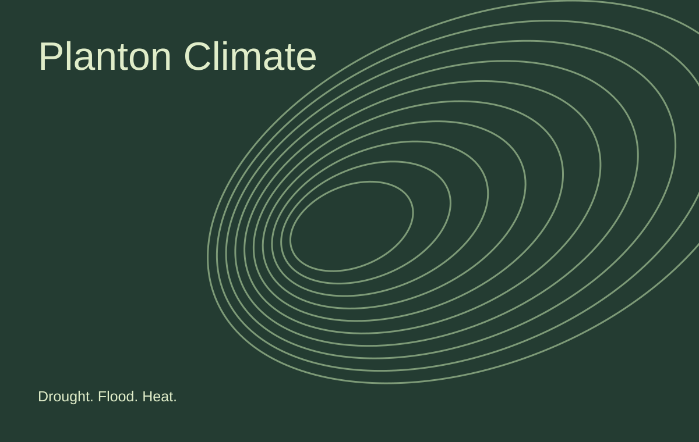
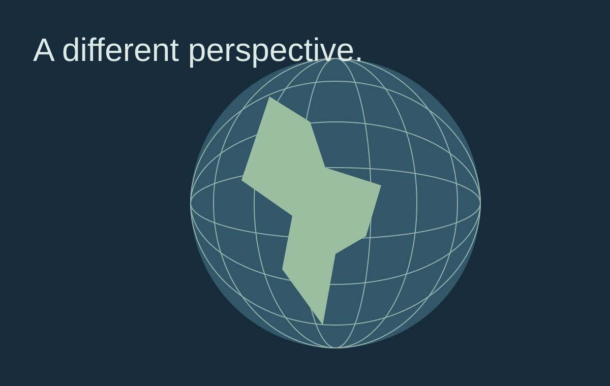
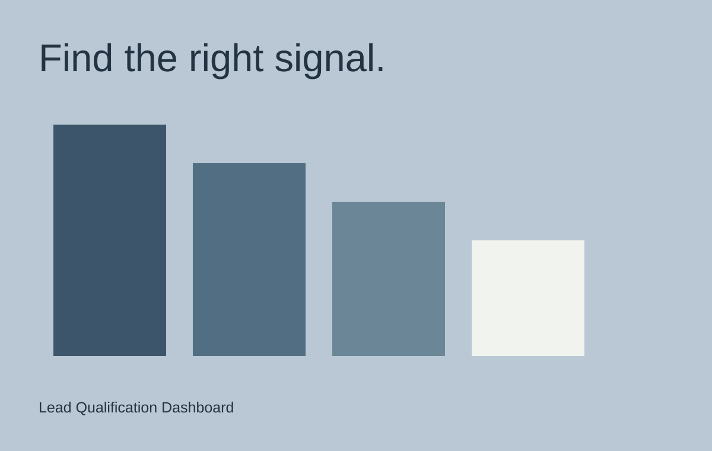

Climate Football Intelligence
Climate Intelligence
Football, weather, and the patterns between them. Match data, player context, and predictive models in one exploration system.

I build data pipelines, applied AI, and analytics products. Into maths. Driven by what we can make with it.
From climate questions to working software.

Climate Intelligence
Football, weather, and the patterns between them. Match data, player context, and predictive models in one exploration system.

Climate risk
Drought, flood, and heatwave analysis, from climate data pipelines to forecasting and dashboards.
Generative AI
A poster generation and curation experiment exploring visual discovery, mood, and human interaction with generative AI.

Interactive systems
An immersive geography interface with country exploration, spatial interaction, and AI assistance.

Analytics product
A full-stack dashboard for lead filtering, enrichment, event tracking, and sales qualification.
Repository screenshots of the overview, rankings, and match simulator.
I’m Rounak, a builder interested in the space where AI, maths, and data meet.
My work spans enterprise data engineering, applied AI, climate intelligence, and product experiments. I like taking an open question, understanding the data behind it, and building something people can use.
More on GitHubProfessional experience across enterprise data engineering and applied AI.
Tyson Foods IT Solutions
Designed scalable enterprise data models and automated ETL pipelines, built predictive Power BI reporting, and contributed to $25M+ in reported savings through production and cost data.
NxtGen Data Infinite Center
Built OCR and computer vision workflows, real-time attendance tracking systems, and data preprocessing pipelines for applied AI experiments.
Academic grounding across big data science, engineering, and analytical systems thinking.
Queen Mary University of London
Focused on large-scale data systems, analytical modelling, and applied data science.
MVJ College of Engineering
Built the engineering foundation behind systems thinking, computation, and problem solving.
Building a stronger foundation for applied AI.
Agentic architecture, tool design and MCP integration, Claude Code workflows, prompt engineering, and evaluation.
About the certificationThe tools and capabilities I use across AI, data products, analytics, and delivery.
For opportunities, collaborations, or a good problem to solve.
rounak26thakur